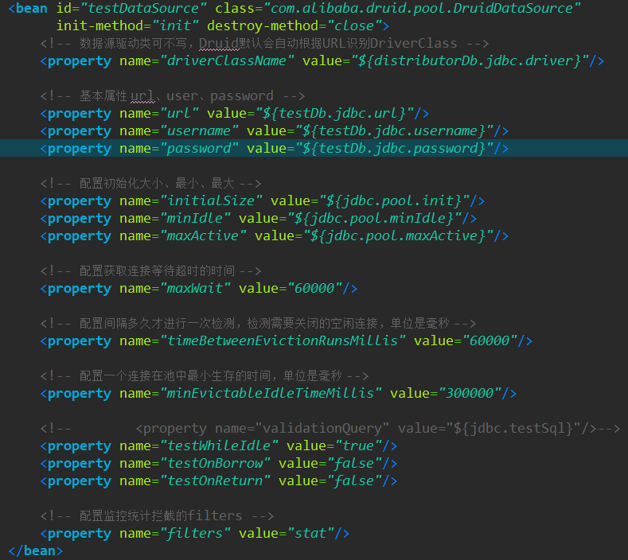
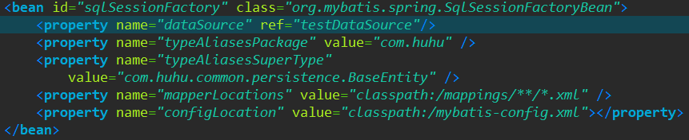
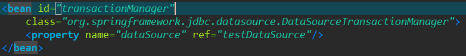
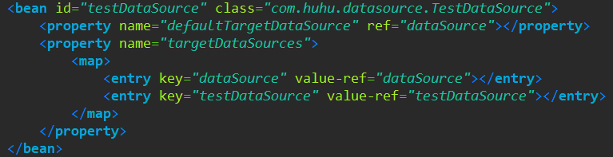
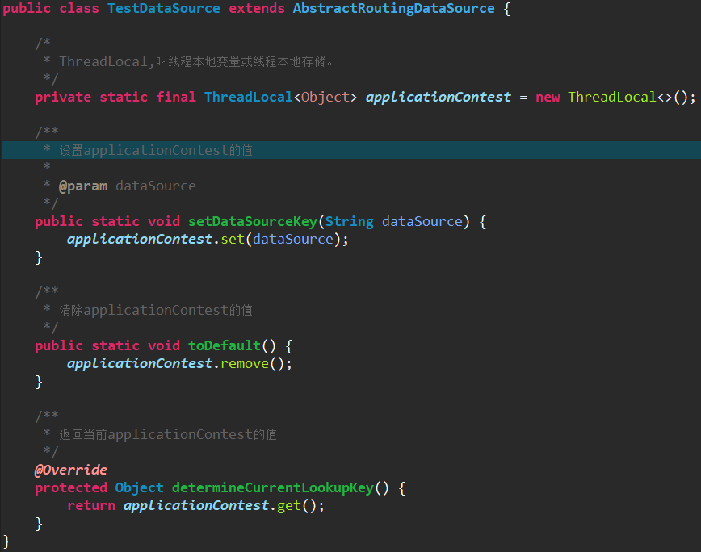
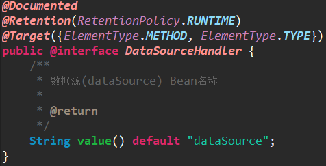
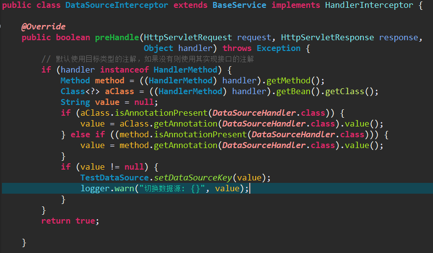
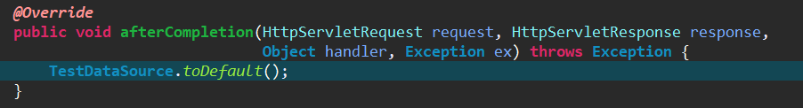

原文出处:本文由博客园博主HuuuWnnn提供。
原文连接:https://www.cnblogs.com/HuuuWnnn/p/11814246.html
原文连接:https://www.cnblogs.com/HuuuWnnn/p/11814246.html
我们最早做新项目的时候一直想做数据库的读写分离与主从同步，由于一些原因一直没有去做这个事情，这次我们需要配置双数据源的起因是因为我们做了一个新项目用了另一个数据库，需要把这个数据库的数据显示到原来的后来上。读写分离本质其实就是写入主库，读从库，就是多数据源的切换，有很多中间件能帮我们完成也有自己实现，大部分做法都是通过aop实现的，再进行service操作的前就把数据源切换了。实现思路都大致相同，具体使用就是仁者见仁智者见智了。
第一步：设置数据源，在原来的配置文件加上新的数据源

第二步：修改mybatis配置sqlSessionFactory

第三步：修改事务transactionManager

第四步：配置dateSource引用

第五步：定义一个数据源切换类

最后一步使用：根据现有业务决定定义注解方式标注哪些类或方法需要使用新数据源，通过拦截器方式拦截所有请求
定义注解

配置连接器

创建拦截器实现数据源切换（省略postHandle方法）


然后再需要使用的类或者方法加上@TestDataSource("testDataSource")就可以切换数据源了。使用有很多方式，文章介绍的只是我现在业务用到的，最终都是使用切换类来切换数据库dateSource。前端时间一直很忙，没有闲下来去学一些东西，忙新项目的过程中也遇到一些我没见到过的问题，我会写下来分享出来。这篇文章只介绍了springmvc中使用，在springboot中也时一样的，也可以通过注解的方式来实现。